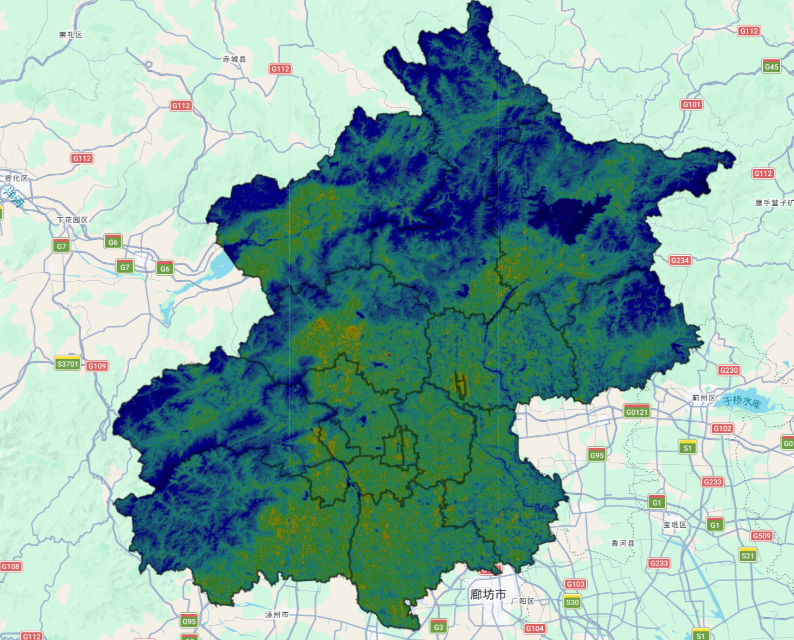
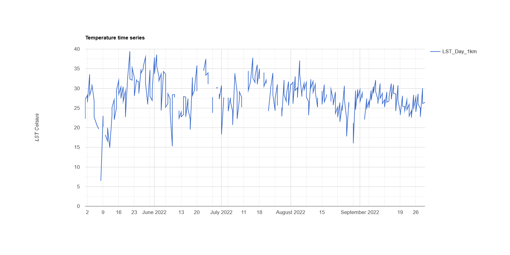
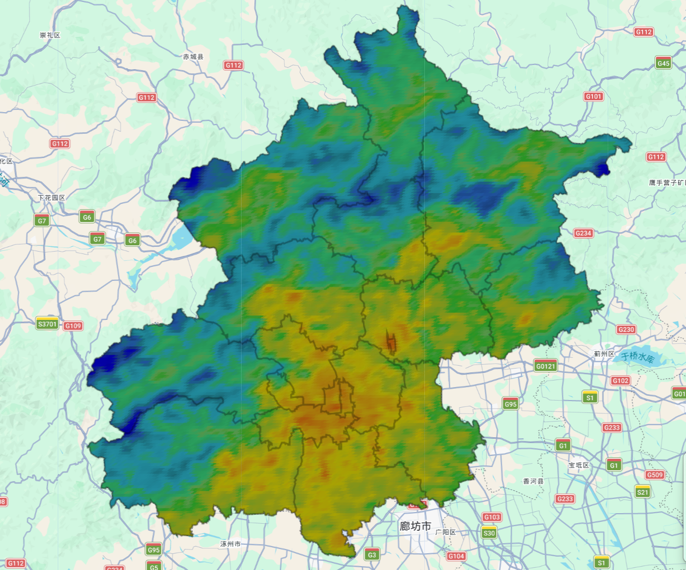
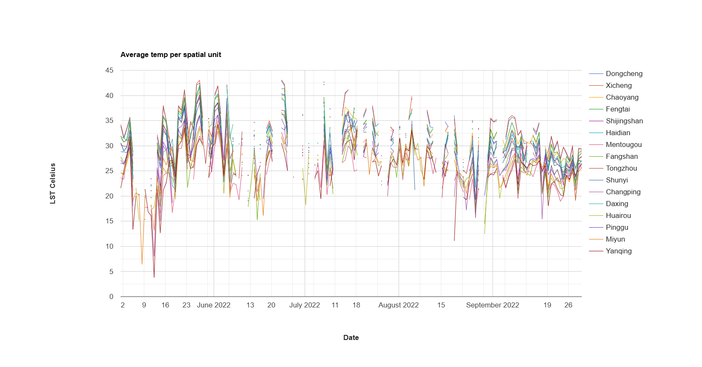
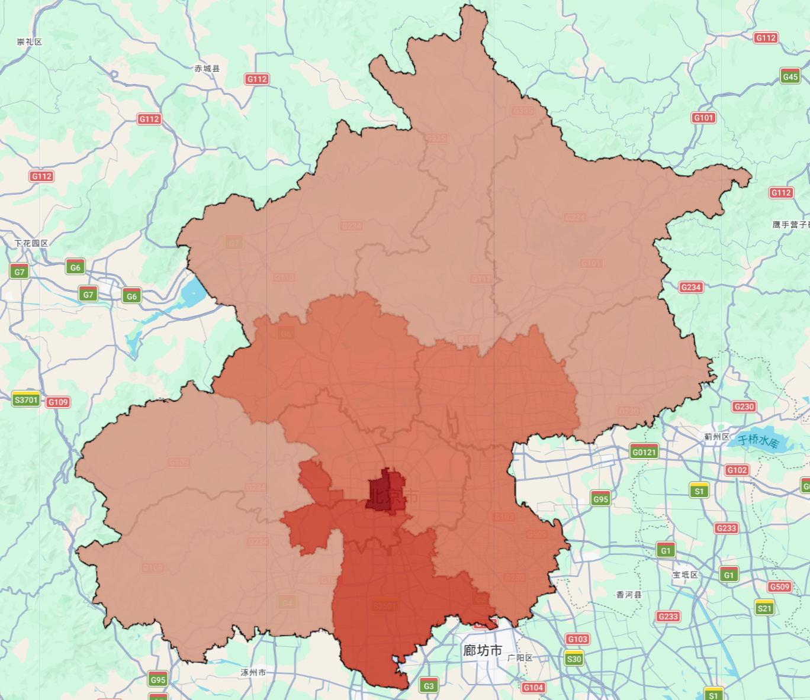
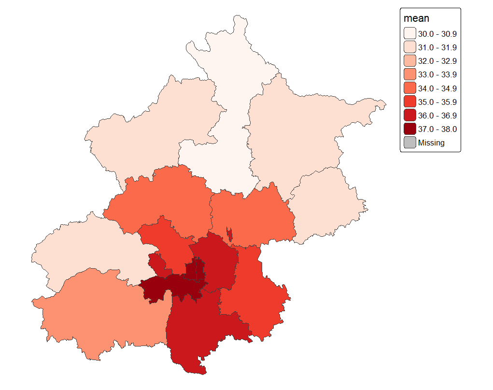
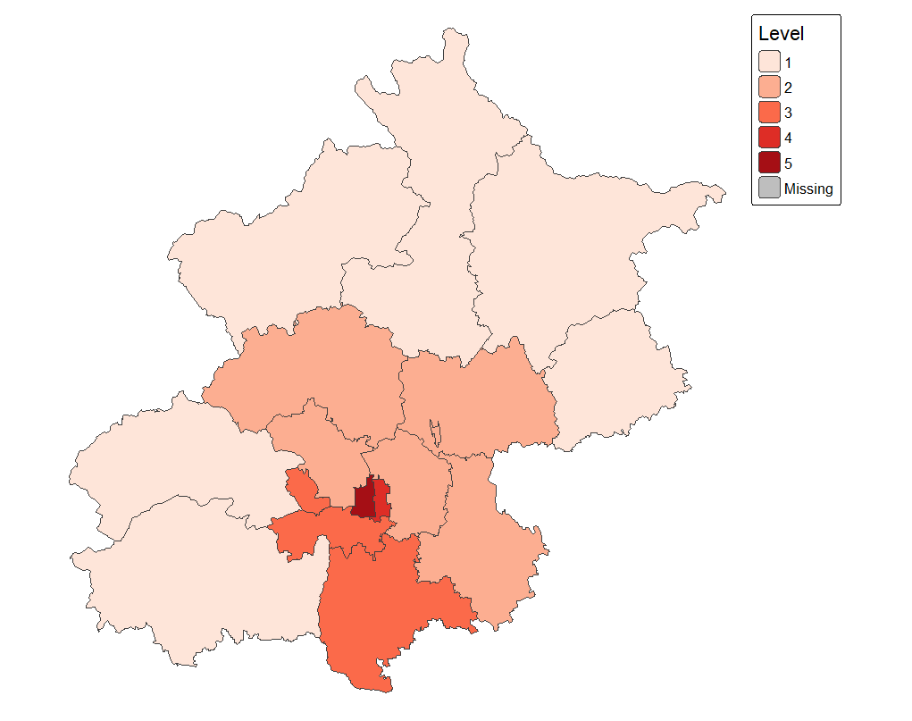
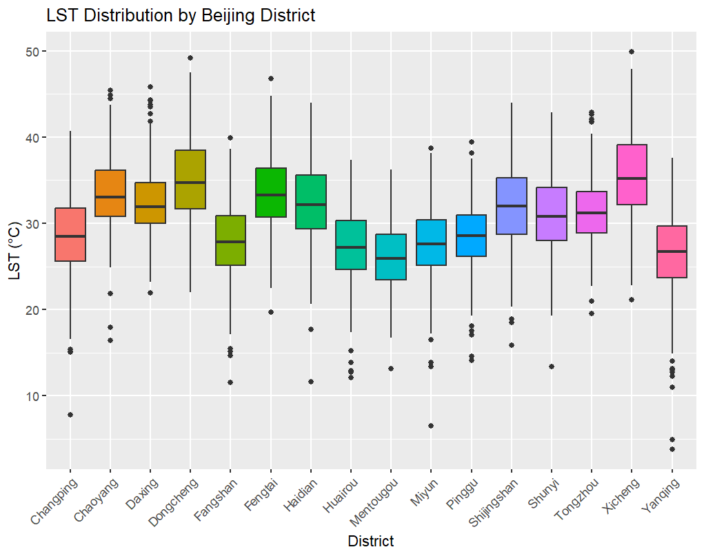

Week 9 Learning Diary: Temperature
Urban Heat, Social Inequality, and Land Surface Temperature Analysis over Beijing in GEE and R
1. Content Summary
1.2 Two Sensors, Two Trade-offs: Landsat and MODIS
LST can be retrieved from both Landsat 8 and MODIS, but they offer fundamentally different trade-offs between spatial and temporal resolution:
- Landsat ST_B10 — 30m spatial resolution, ~16-day revisit, scale factor: \(T(K) = DN \times 0.00341802 + 149.0\), then subtract 273.1 for Celsius. Good for mapping spatial patterns within a city.
- MODIS (Aqua MYD11A1 + Terra MOD11A1) — 1km resolution, ~1-2 day revisit, scale factor: \(\times 0.02 - 273.1\). Unsuitable for within-city spatial detail but excellent for time series analysis.
| Sensor | Resolution | Revisit | Images (May–Sep 2022) | Best For |
|---|---|---|---|---|
| Landsat 8 | 30m | ~16 days | 13 | Spatial patterns |
| MODIS Aqua | 1km | ~1 day | 153 | Time series |
| MODIS Terra | 1km | ~1 day | 153 | Time series |
(MacLachlan et al. 2021) demonstrate how combining these two sources — Landsat for spatial specificity and MODIS for temporal density — can support evidence-based urban heat mitigation planning.
1.3 The Heat Index: From Raw LST to Policy-Relevant Classification
Raw LST values are hard for planners to act on directly. The workshop introduced a percentile-based heat index modelled on BBC methodology, which classifies each administrative unit into one of five heat hazard levels based on where its mean summer temperature falls in the distribution:
\[\text{Heat Level} = \begin{cases} 1 & \text{if } T \leq p_{40} \\ 2 & \text{if } p_{40} < T \leq p_{70} \\ 3 & \text{if } p_{70} < T \leq p_{90} \\ 4 & \text{if } p_{90} < T \leq p_{99} \\ 5 & \text{if } T > p_{99} \end{cases}\]
This converts a continuous temperature surface into a discrete risk ranking that can guide resource allocation — directing cooling centres, tree-planting initiatives, or emergency health services to Level 4 and 5 areas (Cardille et al. 2023).
Classifying by percentile rank rather than fixed temperature thresholds means the index is relative to the local distribution, not absolute. A Level 5 district in Beijing is the hottest relative to other districts in the municipality, but not necessarily hotter than a Level 3 area in a different city. This is appropriate for within-city targeting but not for cross-city comparison.
2. Applications of the Content
2.1 Study Area: Beijing Municipality
I chose Beijing as the study area for this week. Beijing municipality is an ideal case for urban heat analysis: it is a large, dense megacity surrounded by mountainous rural areas, meaning the contrast between hot urban core and cooler periphery is sharp and spatially interpretable. The municipality encompasses both the dense commercial and residential centre and extensive outer districts including mountainous terrain to the north and west.
For administrative boundaries I used DataV (Alibaba Cloud) district-level vector data rather than GADM or FAO GAUL, for two reasons. First, GAUL Level 2 returns only 2 features for Beijing — insufficient for meaningful per-district analysis. Second, GADM Level 3, while providing more subdivisions, aggregates Beijing’s six inner city districts (Dongcheng, Xicheng, Chaoyang, Haidian, Fengtai, Shijingshan) into a single combined feature, which obscures the thermal differences between these densely developed but spatially distinct areas. The DataV dataset provides all 16 official administrative districts of Beijing as separate polygons, fully consistent with the administrative boundaries used in Chinese urban planning. District names were stored as Chinese characters in the source data and were mapped to romanised pinyin in GEE before export to ensure compatibility with R and all downstream outputs.
The overall Beijing boundary used for filterBounds and clip operations is derived by calling .union() on the 16-district collection, ensuring complete spatial consistency between the raster clip boundary and the district polygons.
GADM 4.1 Level 3 provides only 11 spatial units for Beijing — it merges the six inner-city districts (Dongcheng, Xicheng, Chaoyang, Haidian, Fengtai, Shijingshan) into a single polygon labelled “Beijing”. This is problematic for heat analysis because these districts have meaningfully different land cover and thermal regimes: Dongcheng and Xicheng are the oldest, most densely built areas; Haidian contains large university campuses and parks; Chaoyang is a mix of commercial high-rises and residential estates. The DataV dataset separates all 16 districts, allowing these contrasts to be resolved.
2.2 Loading the Study Area Boundary
The 16-district DataV shapefile was uploaded as a GEE Asset after conversion from GeoJSON via QGIS (retaining only the adcode and name fields to avoid format incompatibilities). A pinyin name field (name_py) is added in GEE using a dictionary mapping before any analysis is run. The overall Beijing boundary is derived by .union() on the same collection.
Show GEE code
//--------------------------Vector data---------------------------
var dataset = ee.FeatureCollection("FAO/GAUL/2015/level1");
var dataset_style = dataset.style({
color: '1e90ff',
width: 2,
fillColor: '00000000',
});
Map.addLayer(dataset, {}, 'Second Level Administrative Units_1');
// Load DataV 16 districts shapefile (uploaded as GEE Asset)
var Beijing_level2 = ee.FeatureCollection(
'projects/week6-gee-coursework/assets/Beijng'
);
// Map Chinese district names to pinyin for downstream compatibility
var pinyinMap = ee.Dictionary({
'东城区': 'Dongcheng',
'西城区': 'Xicheng',
'朝阳区': 'Chaoyang',
'丰台区': 'Fengtai',
'石景山区': 'Shijingshan',
'海淀区': 'Haidian',
'门头沟区': 'Mentougou',
'房山区': 'Fangshan',
'通州区': 'Tongzhou',
'顺义区': 'Shunyi',
'昌平区': 'Changping',
'大兴区': 'Daxing',
'怀柔区': 'Huairou',
'平谷区': 'Pinggu',
'密云区': 'Miyun',
'延庆区': 'Yanqing'
});
Beijing_level2 = Beijing_level2.map(function(feat) {
var pinyin = pinyinMap.get(feat.get('name'));
return feat.set('name_py', pinyin);
});
// Derive overall Beijing boundary from union of 16 districts
var Beijing = Beijing_level2.union();
Map.addLayer(Beijing, {}, 'Beijing');
print('Beijing spatial units:', Beijing_level2.size());
print('Unit names:', Beijing_level2.aggregate_array('name_py'));2.3 Landsat 8 Land Surface Temperature
The thermal band ST_B10 records top-of-atmosphere brightness temperature in Kelvin; after applying the standard scale factor and subtracting 273.1, the result is surface temperature in Celsius. A strict cloud cover threshold of < 1% is used to maximise scene quality over the study period, yielding 13 scenes.
Show GEE code
//--------------------------Landsat data---------------------------
function applyScaleFactors(image) {
var opticalBands = image.select('SR_B.').multiply(0.0000275).add(-0.2);
var thermalBands = image.select('ST_B.*').multiply(0.00341802).add(149.0);
return image.addBands(opticalBands, null, true)
.addBands(thermalBands, null, true);
}
var landsat = ee.ImageCollection('LANDSAT/LC08/C02/T1_L2')
.filterDate('2022-01-01', '2022-10-10')
.filter(ee.Filter.calendarRange(5, 9,'month'))
.filterBounds(Beijing)
.filter(ee.Filter.lt("CLOUD_COVER", 1))
.map(applyScaleFactors);
print(landsat);
var subtracted = landsat.select('ST_B10').map(function (image) {
var subtract = image.subtract(273.1);
var mask = subtract.gt(0);
var mask_0 = subtract.updateMask(mask);
return mask_0;
});
var subtracted_mean = subtracted.reduce(ee.Reducer.mean())
.clip(Beijing);
var vis_params = {
min: 20,
max: 55,
palette: [
'040274', '040281', '0502a3', '0502b8', '0502ce', '0502e6',
'0602ff', '235cb1', '307ef3', '269db1', '30c8e2', '32d3ef',
'3be285', '3ff38f', '86e26f', '3ae237', 'b5e22e', 'd6e21f',
'fff705', 'ffd611', 'ffb613', 'ff8b13', 'ff6e08', 'ff500d',
'ff0000', 'de0101', 'c21301', 'a71001', '911003'
]
};
Map.addLayer(subtracted_mean, vis_params, 'Landsat Temp');
2.4 MODIS Time Series and Per-District Analysis
With only 13 Landsat scenes available, temporal analysis is limited. MODIS compensates — merging Aqua (153 images) and Terra (153 images) gives 306 observations for the same period, enabling a meaningful temperature time series that reveals seasonal dynamics invisible to Landsat alone.
Show GEE code
//--------------------------MODIS (unscaled, for reference)---------------------------
var MODIS_Aqua_day = ee.ImageCollection('MODIS/061/MYD11A1')
.filterDate('2022-01-01', '2022-10-10')
.filter(ee.Filter.calendarRange(5, 9,'month'))
.filterBounds(Beijing)
.select('LST_Day_1km');
print(MODIS_Aqua_day, "MODIS_AQUA");
var MODIS_Terra_day = ee.ImageCollection('MODIS/061/MOD11A1')
.filterDate('2022-01-01', '2022-10-10')
.filter(ee.Filter.calendarRange(5, 9,'month'))
.filterBounds(Beijing)
.select('LST_Day_1km');
print(MODIS_Terra_day, "MODIS_Terra");
//--------------------------MODIS scaling---------------------------
function MODISscale(image) {
var temp = image.select('LST_.*').multiply(0.02).subtract(273.1);
return image.addBands(temp, null, true);
}
var MODIS_Aqua_day = ee.ImageCollection('MODIS/061/MYD11A1')
.filterDate('2022-01-01', '2022-10-10')
.filter(ee.Filter.calendarRange(5, 9,'month'))
.select('LST_Day_1km')
.map(MODISscale)
.filterBounds(Beijing);
var MODIS_Terra_day = ee.ImageCollection('MODIS/061/MOD11A1')
.filterDate('2022-01-01', '2022-10-10')
.filter(ee.Filter.calendarRange(5, 9,'month'))
.filterBounds(Beijing)
.select('LST_Day_1km')
.map(MODISscale);
//--------------------------MODIS mean image---------------------------
var landSurfaceTemperatureVis = {
min: 15, max: 45,
palette: [
'040274', '040281', '0502a3', '0502b8', '0502ce', '0502e6',
'0602ff', '235cb1', '307ef3', '269db1', '30c8e2', '32d3ef',
'3be285', '3ff38f', '86e26f', '3ae237', 'b5e22e', 'd6e21f',
'fff705', 'ffd611', 'ffb613', 'ff8b13', 'ff6e08', 'ff500d',
'ff0000', 'de0101', 'c21301', 'a71001', '911003'
],
};
var mean_aqua_terra = MODIS_Aqua_day.merge(MODIS_Terra_day)
.reduce(ee.Reducer.mean())
.clip(Beijing);
Map.addLayer(mean_aqua_terra, landSurfaceTemperatureVis,
'MODIS Land Surface Temperature');
//--------------------------Time series---------------------------
var aqua_terra = MODIS_Aqua_day.merge(MODIS_Terra_day);
var timeseries = ui.Chart.image.series({
imageCollection: aqua_terra,
region: Beijing,
reducer: ee.Reducer.mean(),
scale: 1000,
xProperty: 'system:time_start'
}).setOptions({
title: 'Temperature time series',
vAxis: {title: 'LST Celsius'}
});
print(timeseries);

For the per-district time series, I used seriesByRegion to plot a separate line for each administrative unit. With 16 DataV districts and 306 merged Aqua+Terra images, the element count (16 × 306 = 4,896) remains within GEE’s 5,000 element limit, allowing the full merged dataset to be used without subsampling.
Show GEE code
//--------------------------Statistics per district (16 districts)---------------------------
Map.addLayer(Beijing_level2, {}, 'Beijing Districts (16)');
print(subtracted_mean);
var mean_Landsat_level2 = subtracted_mean.reduceRegions({
collection: Beijing_level2,
reducer: ee.Reducer.mean(),
scale: 30,
});
Map.addLayer(mean_Landsat_level2, {}, 'mean_Landsat_level2');
Export.table.toDrive({
collection: mean_Landsat_level2,
description: 'mean_Landsat_level2',
fileFormat: 'GeoJSON'
});
//--------------------------MODIS per spatial unit---------------------------
var timeseries_per_unit = ui.Chart.image.seriesByRegion({
imageCollection: aqua_terra,
regions: Beijing_level2,
reducer: ee.Reducer.mean(),
scale: 1000,
seriesProperty: 'name_py',
xProperty: 'system:time_start'
}).setOptions({
title: 'Average temp per spatial unit',
hAxis: {title: 'Date', titleTextStyle: {italic: false, bold: true}},
vAxis: {
title: 'LST Celsius',
titleTextStyle: {italic: false, bold: true}
},
lineWidth: 1
});
print(timeseries_per_unit);
//--------------------------Export triplets CSV---------------------------
var triplets = aqua_terra.map(function(image) {
return image.select('LST_Day_1km').reduceRegions({
collection: Beijing_level2.select(['adcode', 'name_py']),
reducer: ee.Reducer.mean(),
scale: 30
}).filter(ee.Filter.neq('mean', null))
.map(function(f) {
return f.set('imageId', image.id());
});
}).flatten();
print(triplets.first(), "trip");
Export.table.toDrive({
collection: triplets,
description: 'triplets_beijing',
fileNamePrefix: 'triplets_beijing',
fileFormat: 'CSV'
});
The triplets CSV — one row per (district, date, mean LST) — is the format needed for time series modelling in R. With 153 Aqua + 153 Terra images per district, there are sufficient observations to run a Mann-Kendall trend test and determine whether any district shows a statistically significant warming or cooling trend over the summer period. The exported CSV includes both adcode (numeric district ID) and name_py (romanised district name) for easy joining in R.
2.5 Heat Index Classification in GEE and R
The final step classifies each district into a heat hazard level based on percentile rank of mean summer Landsat LST. This replicates the BBC heat vulnerability index methodology. I implemented this in both GEE and R to cross-check results.
One thing I noticed while doing this: the BBC method was originally designed for datasets with hundreds of spatial units (like UK postcodes or wards). Applied to Beijing’s 16 districts, the p99 threshold still ends up isolating just one or two districts. This is an improvement over the previous 11-unit analysis — where the same problem was more severe — but the distribution still has limited shape at this spatial resolution. A standard deviation-based classification, or applying the index at sub-district level, would produce a more informative result.
When I cross-checked the GEE output against the R maps, I found a boundary condition bug: the original classification uses strict inequalities throughout, meaning if a district’s mean LST falls exactly on a threshold value it falls into the else branch with percentile_cat = 0. The fix is to replace .gt() with .gte() for all lower-bound comparisons, which has been applied in the code below.
GEE Implementation
Show GEE code
//--------------------------Heat index (GEE)---------------------------
var percentiles = mean_Landsat_level2.reduceColumns({
reducer: ee.Reducer.percentile([10, 20, 30, 40, 50, 60, 70, 80, 90, 99, 100]),
selectors: ['mean']
});
print(percentiles, "percentile");
var p40 = ee.Number(percentiles.get('p40'));
var p70 = ee.Number(percentiles.get('p70'));
var p90 = ee.Number(percentiles.get('p90'));
var p99 = ee.Number(percentiles.get('p99'));
var p100 = ee.Number(percentiles.get('p100'));
print(p40, "p40");
var resub = mean_Landsat_level2.map(function(feat) {
return ee.Algorithms.If(
ee.Number(feat.get('mean')).lt(p40).and(ee.Number(feat.get('mean')).gt(0)),
feat.set({'percentile_cat': 1}),
ee.Algorithms.If(
ee.Number(feat.get('mean')).gte(p40).and(ee.Number(feat.get('mean')).lt(p70)),
feat.set({'percentile_cat': 2}),
ee.Algorithms.If(
ee.Number(feat.get('mean')).gte(p70).and(ee.Number(feat.get('mean')).lt(p90)),
feat.set({'percentile_cat': 3}),
ee.Algorithms.If(
ee.Number(feat.get('mean')).gte(p90).and(ee.Number(feat.get('mean')).lt(p99)),
feat.set({'percentile_cat': 4}),
ee.Algorithms.If(
ee.Number(feat.get('mean')).gte(p99),
feat.set({'percentile_cat': 5}),
feat.set({'percentile_cat': 0}))))));
});
var visParams_vec = {
'palette': ['#fee5d9', '#fcae91', '#fb6a4a', '#de2d26', '#a50f15'],
'min': 1,
'max': 5,
'opacity': 1.0,
};
var image = ee.Image().float().paint(resub, 'percentile_cat');
Map.addLayer(image, visParams_vec, 'Percentile_cat');
// Export Landsat LST raster for R interactive map
Export.image.toDrive({
image: subtracted_mean,
description: 'subtracted_mean',
region: Beijing,
scale: 30,
fileFormat: 'GeoTIFF'
});
R Implementation
The GeoJSON exported from GEE was loaded into R for independent heat index calculation and visualisation using tmap. With 16 districts the percentile distribution has more shape than the previous 11-unit analysis, making the classification more interpretable.
Show R code
library(tidyverse)
library(sf)
library(tmap)
# Read GeoJSON exported from GEE
temp <- st_read("E:/Remote/week9/mean_Landsat_level2.geojson")
# Plot mean LST per district
tmap_mode("plot")
tm1 <- tm_shape(temp) +
tm_polygons("mean", palette = "Reds") +
tm_legend(show = TRUE) +
tm_layout(frame = FALSE)
tm1
# Percentile rank function
perc.rank <- function(x) trunc(rank(x))/length(x)
percentile <- temp %>%
mutate(percentile1 = (perc.rank(mean)) * 100) %>%
mutate(Level = case_when(
between(percentile1, 0, 39.99) ~ "1",
between(percentile1, 40, 69.99) ~ "2",
between(percentile1, 70, 89.99) ~ "3",
between(percentile1, 90, 98.99) ~ "4",
between(percentile1, 99, 100) ~ "5"
))
# Verify breakpoints
test <- quantile(temp$mean, c(0.39999, 0.69999, 0.8999, 0.98999, 1.0))
print(test)
# Heat index static map
tm2 <- tm_shape(percentile) +
tm_polygons("Level", palette = "Reds") +
tm_legend(show = TRUE) +
tm_layout(frame = FALSE)
tm2

The interactive map overlays the 30m Landsat LST raster with the district-level heat index polygons, allowing inspection of the correspondence between pixel-level temperature variation and the district-level classification.
Show R code — interactive map
library(terra)
temp_rast <- rast("E:/Remote/week9/subtracted_mean.tif")
# Downsample to reduce file size for rendering
temp_rast_small <- aggregate(temp_rast, fact = 4)
tmap_mode("view")
interactive <- tm_shape(temp_rast_small) +
tm_raster(col = "ST_B10_mean",
col.scale = tm_scale_continuous(values = "brewer.reds")) +
tm_shape(percentile) +
tm_polygons(fill = "Level",
fill.scale = tm_scale_categorical(values = "brewer.reds"),
fill_alpha = 0.7) +
tm_legend()
interactiveFigure 8: Interactive tmap view overlaying the Landsat LST raster (120m resampled) and the heat hazard district polygons at 70% opacity. The raster and district boundaries are now spatially consistent — both derived from the same DataV geometry — eliminating the misalignment visible in earlier versions of the map.
2.6 Extended Analysis: Mann-Kendall Trend Test
I also ran a Mann-Kendall trend test on the MODIS triplets CSV to determine whether each district showed a statistically significant temperature trend over the May–September 2022 period.
Show R code
library(tidyverse)
library(Kendall)
# 1. Read data
triplets <- read_csv("E:/Remote/week9/triplets_beijing.csv")
# 2. Mann-Kendall test per district
results <- triplets %>%
group_by(adcode) %>%
summarise(
mk_tau = MannKendall(mean)$tau,
mk_pval = MannKendall(mean)$sl
)
# 3. Extract district name lookup
name_lookup <- triplets %>%
select(adcode, name_py) %>%
distinct()
# 4. Join district names
results_named <- results %>%
left_join(name_lookup, by = "adcode") %>%
select(name_py, adcode, mk_tau, mk_pval)
print(results_named)
# 5. Boxplot of LST distribution by district
ggplot(triplets, aes(x = name_py, y = mean, fill = name_py)) +
geom_boxplot() +
labs(x = "District", y = "LST (°C)",
title = "LST Distribution by Beijing District") +
theme(axis.text.x = element_text(angle = 45, hjust = 1),
legend.position = "none")All 16 districts show a statistically significant negative tau (all p < 0.001), indicating a consistent cooling trend across the summer period. This reflects the seasonal influence of the East Asian summer monsoon: temperatures peak in May–June then decline through July–August as monsoon rainfall increases cloud cover and reduces incoming solar radiation. Daxing shows the steepest decline (τ = −0.346), consistent with its low-lying plain location most exposed to monsoonal rainfall, while Yanqing shows the weakest trend (τ = −0.151), reflecting its more sheltered mountainous position.
Separating the former “Beijing central urban” unit into its six constituent districts reveals that their Mann-Kendall slopes are similar in magnitude (τ ranging from −0.291 for Haidian to −0.336 for Xicheng), suggesting the monsoon cooling signal is consistent across the inner city, even though their absolute temperature levels differ. This pattern was invisible in the previous 11-unit analysis.
That said, the monsoon season also brings heavy cloud cover, and I didn’t apply any QA bitmask cloud filtering to the MODIS data. This means some of those very sharp dips in the time series — particularly the drop to around 7°C visible in early June (Figure 2) — are almost certainly cloud contamination rather than real surface cooling. MODIS is an optical sensor and picks up cloud-top temperatures when thick cloud is present. The negative tau values likely partly reflect increasing cloud cover through the monsoon season rather than pure surface cooling.

2.7 Literature: Heat Justice and EO Evidence
(Wilson 2020) and (Li et al. 2022) both argue that heat maps only become policy-relevant when overlaid with socio-economic data — knowing where it is hot is less useful than knowing who is exposed there and why. (MacLachlan et al. 2021) provide a direct example in practice: using Landsat LST alongside green space and population density data to identify priority intervention zones in Perth, Australia. For Beijing, the heat index produced here (Figures 5 and 7) and the LST distribution (Figure 9) together show that the inner-city districts (Xicheng, Dongcheng) and Daxing consistently record the highest temperatures — the inner city through extreme impervious surface density and historic building stock, and Daxing through its flat, low-albedo agricultural and peri-urban plains. Whether those areas also have lower green cover and higher population vulnerability is a question the analysis cannot yet answer, but it is exactly the kind of equity question that (Cardille et al. 2023) points towards.
The Level 4–5 districts identified here — Xicheng, Dongcheng, Fengtai, and Daxing — could form the basis for targeted urban greening or heat emergency planning, though for very different reasons: Daxing needs more vegetation cover on its agricultural plains, while the inner-city districts need shade trees, cool surface materials, and enhanced green infrastructure in their dense street networks. The 16-district breakdown makes it possible to distinguish these mechanistically different cases — a distinction that was impossible with the previous single “Beijing central urban” aggregate. Overlaying this heat index with population density, elderly population share, and green cover data would transform a thermal map into a genuine vulnerability assessment.
3. Personal Reflection
3.1 From Classification to Temperature
Weeks 7 and 8 produced land cover maps of Chengdu — urban core, vegetation, bare earth, water. This week asks what those surfaces actually feel like in summer. The connection is immediate and satisfying: the areas that classified as dense urban or bare earth in weeks 7 and 8 share the same spectral logic as the hottest zones on the Landsat LST map here (Figure 1). The heat index confirms this quantitatively — the dense historic cores of Xicheng and Dongcheng reach the highest levels, while Haidian’s campus greenery keeps it measurably cooler than its neighbours.
What surprised me most was the seasonal structure in the MODIS time series — and the lesson it taught me about working with raw satellite data. Looking at Figure 2, I first noticed that temperatures peaked in late May and early June rather than July or August as I expected. Then came the dramatic late-June drop, with some districts falling below 10°C. My initial reaction was to interpret this as a powerful seasonal cooling signal driven by the East Asian monsoon rain belt arriving at Beijing’s latitude — the Mann-Kendall analysis even seemed to confirm this, showing a statistically significant negative tau across all 16 districts.
But then I looked more carefully at the physics. A daytime land surface temperature of 7–10°C in Beijing in June is physically implausible — even with heavy rainfall, the ground doesn’t cool to near-freezing in summer. What’s actually happening is that I didn’t apply QA bitmask cloud filtering to the MODIS collection, so when thick monsoon cloud cover rolls in, the optical sensor picks up freezing cloud-top temperatures and averages them straight into the time series alongside real surface readings. The “dramatic cooling” in the chart is largely a data artefact rather than a real surface phenomenon. It was a useful reminder that a Mann-Kendall test can return a highly significant result and still be telling the wrong physical story if the data preprocessing was incomplete upstream.
3.2 Limitations and the Question of What “Hot” Means
The heat index classification is relative, not absolute. A Level 5 district in Beijing is the hottest relative to other districts in the municipality, but that says nothing about absolute exposure or who lives in the hottest zones. (Klinenberg, n.d.)’s Chicago analysis is a reminder that the deadliest heat events occur where heat coincides with social vulnerability: elderly people living alone, poorly ventilated housing, and neighbourhoods without accessible cool public spaces. The heat index tells you where it is hottest; it does not tell you who bears the greatest burden.
The LST data also captures surface temperature, not air temperature. Rooftops and roads drive very high LST values, but the temperature experienced by a person standing on the street may be substantially lower — especially if tree canopy is present. (Wilson 2020) identifies tree cover as one of the strongest mediators of this gap, and (Nowak, Ellis, and Greenfield 2022) show its systematic absence in historically underinvested areas.
LST from Landsat or MODIS measures the temperature of the surface material — not the air temperature that people experience. In dense urban areas with dark impervious surfaces, LST can exceed air temperature by 10–15°C. This distinction matters when translating satellite data into health risk estimates (MacLachlan et al. 2021).
There are also two places in my approach worth being honest about. The cloud contamination issue already covered in Section 2.6 is one — skipping QA bitmasking keeps the workflow clean but does mean the time series statistics are noisier than they should be. The other is the sample size for the percentile heat index: moving from 11 to 16 districts improved the situation — the former aggregated inner-city unit is now resolved into six separate districts with meaningfully different thermal profiles — but 16 units still provides limited distributional shape for a five-level percentile classification. The p99 threshold still isolates only one or two districts at the top. The classification would be more informative applied at a sub-district level (街道/乡镇), but no publicly available vector boundary dataset for Beijing provides that level of granularity in a format compatible with GEE. This remains the primary spatial limitation of the analysis.